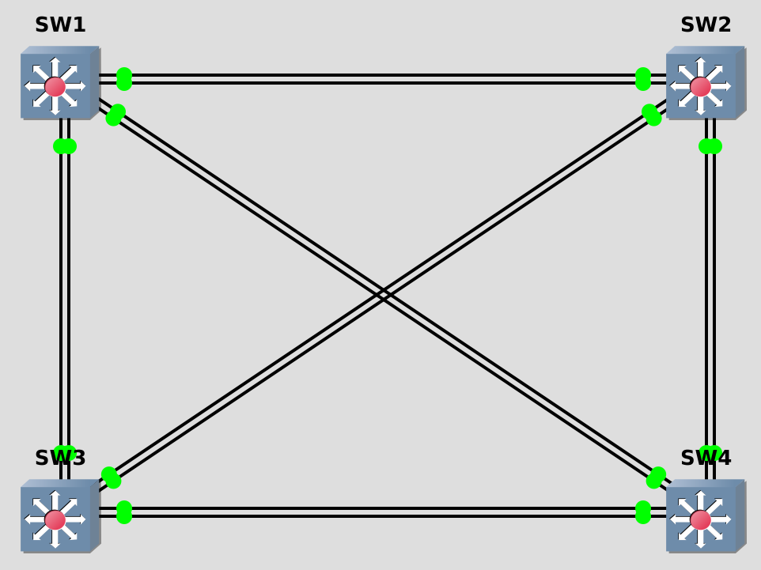
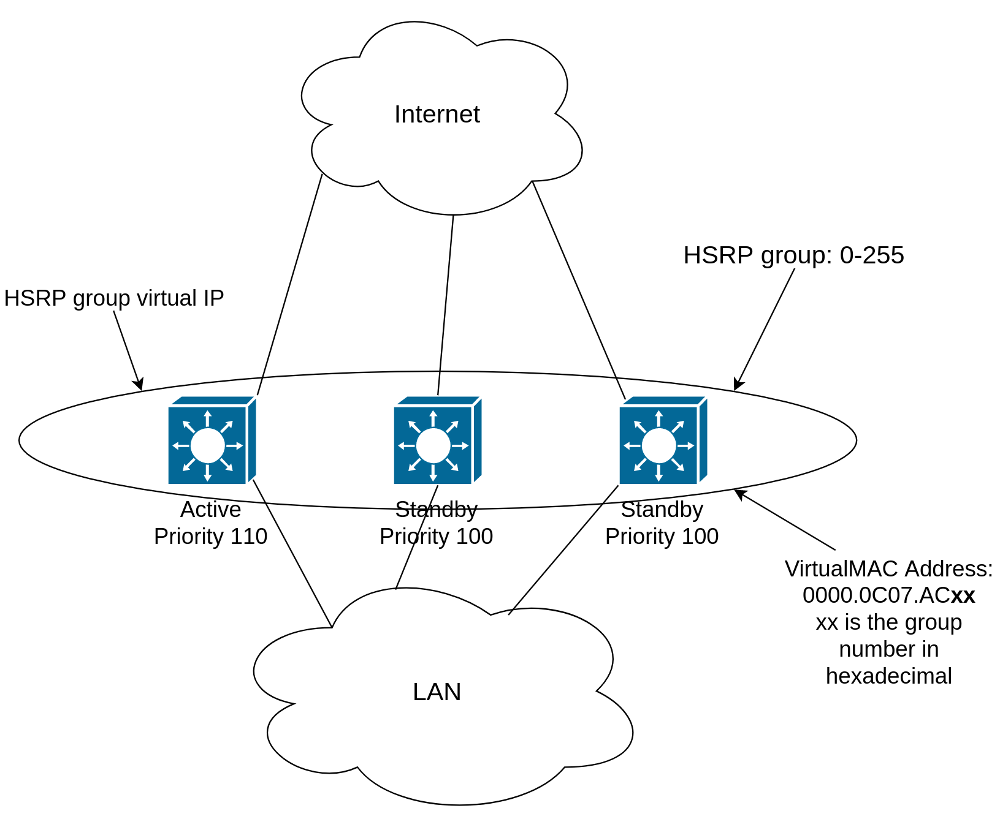
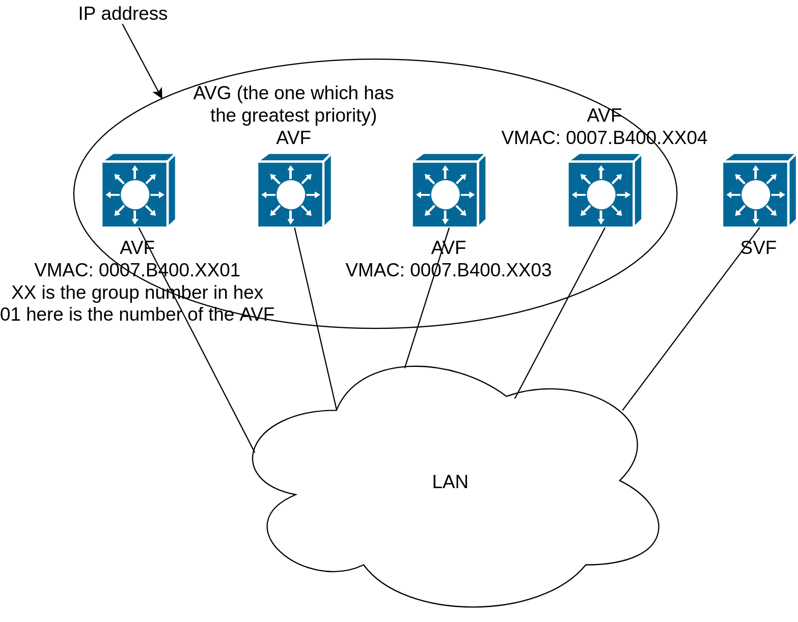
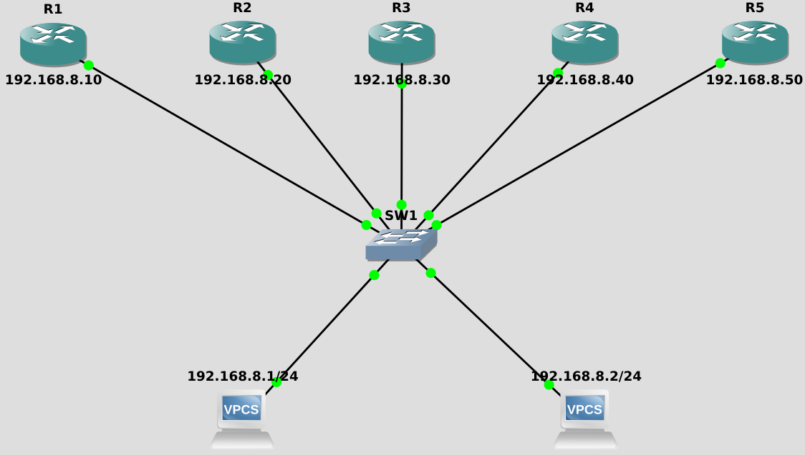

First-hop redundancy protocols (FHRP) - RFC 2281
ccnp-switching
Lab notes on first hop redundancy, configuring HSRP with tracking and timers, VRRP preemption, and GLBP load balancing on Cisco switches and routers.
- Proper functioning of the FHRP depends on proper functioning of layer 2
- I will be configuring them on switches but we can use routers as well
LAB Setup
Topology

Portmapping
from SW1 Gi1/2 to SW2 Gi1/2 from SW1 Gi2/1 to SW2 Gi2/1 from SW1 Gi1/3 to SW3 Gi1/3 from SW1 Gi3/1 to SW3 Gi3/1 from SW1 Gi0/1 to SW4 Gi0/1 from SW1 Gi1/0 to SW4 Gi1/0 from SW2 Gi2/3 to SW3 Gi2/3 from SW2 Gi0/2 to SW4 Gi0/2 from SW2 Gi2/0 to SW4 Gi2/0 from SW3 Gi3/2 to SW2 Gi3/2 from SW3 Gi0/3 to SW4 Gi0/3 from SW3 Gi3/0 to SW4 Gi3/0
Hot Standby Router Protocol (HSRP)

Configuration
- Configure SW1 and SW2 according to the table below
- Enable IP routing on both switches
| VLAN | SVI | |
|---|---|---|
| SW1 | 10 | 172.31.10.1/24 |
| SW1 | 20 | 172.31.20.1/24 |
| SW2 | 10 | 172.31.10.2/24 |
| SW2 | 20 | 172.31.20.2/24 |
- All HSRP Configurations are under the SVI configuration mode
- Make sure SW1 is always the active router for VLAN 10
- Make sure SW2 is always the passive router for VLAN 10
- Use the virtual IP address 172.31.10.254
SW1(config)#interface vlan 10 SW1(config-if)#standby 10 ip 172.31.10.254 SW1(config-if)#standby 10 priority 110 SW1(config-if)#standby 10 preempt
SW2(config)#interface vlan 10 SW2(config-if)#standby 10 ip 172.31.10.254
SW1#show standby Vlan10 - Group 10 State is Active 2 state changes, last state change 00:31:07 Virtual IP address is 172.31.10.254 Active virtual MAC address is 0000.0c07.ac0a (MAC In Use) Local virtual MAC address is 0000.0c07.ac0a (v1 default) Hello time 3 sec, hold time 10 sec Next hello sent in 0.432 secs Preemption enabled Active router is local Standby router is 172.31.10.2, priority 100 (expires in 10.784 sec) Priority 110 (configured 110) Group name is "hsrp-Vl10-10" (default)
- What if you want to trigger the failover based on something less catastrophic than switch failure?
- If either Gi1/2 or Gi2/1 on SW1 goes down, ensure that SW2 becomes the active router for VLAN 10.
SW1(config)#int vlan 10 SW1(config-if)#standby 10 track 1 decrement 11 SW1(config-if)#standby 10 track 2 decrement 11 SW1(config)#track 1 interface gigabitEthernet 1/2 line-protocol SW1(config-track)#exit SW1(config)#track 2 interface gigabitEthernet 2/1 line-protocol SW1(config-track)#end
SW1#show track Track 1 Interface GigabitEthernet1/2 line-protocol Line protocol is Up 1 change, last change 00:04:51 Tracked by: HSRP Vlan10 10 Track 2 Interface GigabitEthernet2/1 line-protocol Line protocol is Up 1 change, last change 00:02:20 Tracked by: HSRP Vlan10 10
SW1#show standby Vlan10 - Group 10 State is Active 2 state changes, last state change 00:52:17 Virtual IP address is 172.31.10.254 Active virtual MAC address is 0000.0c07.ac0a (MAC In Use) Local virtual MAC address is 0000.0c07.ac0a (v1 default) Hello time 3 sec, hold time 10 sec Next hello sent in 1.920 secs Preemption enabled Active router is local Standby router is 172.31.10.2, priority 100 (expires in 9.536 sec) Priority 110 (configured 110) Track object 1 state Up decrement 11 Track object 2 state Up decrement 11 Group name is "hsrp-Vl10-10" (default)
- If either Gi1/2 or Gi2/1 on SW1 goes down, ensure that SW2 becomes the active router for VLAN 10.
SW1(config)#interface gigabitEthernet 1/2 SW1(config-if)#shutdown SW1(config-if)# *Nov 23 00:12:28.842: %TRACK-6-STATE: 1 interface Gi1/2 line-protocol Up -> Down *Nov 23 00:12:30.813: %LINK-5-CHANGED: Interface GigabitEthernet1/2, changed state to administratively down *Nov 23 00:12:31.813: %LINEPROTO-5-UPDOWN: Line protocol on Interface GigabitEthernet1/2, changed state to downNothing happened. Now we have to configure SW2 so that it preempts SW1
SW2(config)#interface vlan 10 SW2(config-if)#standby 10 preempt *Nov 23 00:12:36.683: %HSRP-5-STATECHANGE: Vlan10 Grp 10 state Standby -> Active
SW1# *Nov 23 00:14:35.206: %HSRP-5-STATECHANGE: Vlan10 Grp 10 state Active -> Speak *Nov 23 00:14:46.800: %HSRP-5-STATECHANGE: Vlan10 Grp 10 state Speak -> Standby
SW1#show standby
Vlan10 - Group 10
State is Standby
4 state changes, last state change 00:02:09
Virtual IP address is 172.31.10.254
Active virtual MAC address is 0000.0c07.ac0a (MAC Not In Use)
Local virtual MAC address is 0000.0c07.ac0a (v1 default)
Hello time 3 sec, hold time 10 sec
Next hello sent in 2.448 secs
Preemption enabled
Active router is 172.31.10.2, priority 100 (expires in 7.568 sec)
Standby router is local
Priority 99 (configured 110)
Track object 1 state Down decrement 11
Track object 2 state Up decrement 11
Group name is "hsrp-Vl10-10" (default)
HSRP Timers
HSRP routers send Hello to 224.0.0.2 UDP 1985 every 3 seconds. Hold time is 10 seconds.
HSRP routers are listening to multicast address 224.0.0.2
SW1#show ip interface vlan 10 | i Multicast Multicast reserved groups joined: 224.0.0.2
The timers configured on an active router always override any other timer settings
SW1(config-if)#standby 10 timers 2 7
SW1#show standby vlan 10 Vlan10 - Group 10 State is Standby 1 state change, last state change 01:29:12 Virtual IP address is 172.31.10.254 Active virtual MAC address is 0000.0c07.ac0a (MAC Not In Use) Local virtual MAC address is 0000.0c07.ac0a (v1 default) Hello time 3 sec (cfgd 2 sec), hold time 10 sec (cfgd 7 sec) Next hello sent in 0.640 secs Preemption enabled Active router is 172.31.10.2, priority 100 (expires in 8.416 sec) Standby router is local Priority 99 (configured 110) Track object 1 state Down decrement 11 Track object 2 state Up decrement 11 Group name is "hsrp-Vl10-10" (default)
SW1(config)#interface gigabitEthernet 1/2
SW1(config-if)#no shutdown
SW1#show standby vlan 10
Vlan10 - Group 10
State is Active
2 state changes, last state change 00:01:34
Virtual IP address is 172.31.10.254
Active virtual MAC address is 0000.0c07.ac0a (MAC In Use)
Local virtual MAC address is 0000.0c07.ac0a (v1 default)
Hello time 2 sec, hold time 7 sec
Next hello sent in 0.064 secs
Preemption enabled
Active router is local
Standby router is 172.31.10.2, priority 100 (expires in 5.664 sec)
Priority 110 (configured 110)
Track object 1 state Up decrement 11
Track object 2 state Up decrement 11
Group name is "hsrp-Vl10-10" (default)
HSRP Authentication
- To prevent unexpected devices from spoofing or participating in HSRP
- All routers in the same standby group must have an identical authentication method and key
Plain-Text HSRP Authentication
- Up to 8 characters
SW1(config-if)#standby 20 authentication cisco
MD5 Authentication
- Up to 64 characters
MD5 Authentication using a key-string
SW1(config-if)#standby 20 authentication md5 key-string cisco
MD5 Authentication using key-chain
SW1(config)#key chain CHAIN-HSRP-20 SW1(config-keychain)#key 51 SW1(config-keychain-key)#key-string cisco SW1(config)#interface vlan 20 SW1(config-if)#standby 20 authentication md5 key-chain CHAIN-HSRP-20
- Note that
- HSRP and STP do NOT have any negotiation with each other, so to increase the performance, you have to design the HSRP Active to be the STP root bridge as well
- HSRP version 1 is the default version
- the identifier is not the HSRP group; it is the Virtual IP address
- If the priorities are the same, the switch with higher SVI IP becomes active
- HSRP has 5 states: Initial, listen, speak, standby and active.
- Initial: This is the beginning state. It indicates HSRP is not running. It happens when the configuration changes or the interface is first turned on
- Learn: The router has not determined the virtual IP address and has not yet seen an authenticated hello message from the active router. In this state, the router still waits to hear from the active router
- Listen: The router knows both IP and MAC address of the virtual router but it is not the active or standby router. For example, if there are 3 routers in HSRP group, the router which is not in active or standby state will remain in listen state.
- Speak: The router sends periodic HSRP hellos and participates in the election of the active or standby router.
- Standby: In this state, the router monitors hellos from the active router and it will take the active state when the current active router fails (no packets heard from active router)
- Active: The router forwards packets that are sent to the HSRP group. The router also sends periodic hello messages
HSRP Version 2
- Supports 4096 group numbers
- Virtual MAC address of 0000.0C9F.FXXX (XXX: HSRP group in hexadecimal)
- Hello packets are sent to multicast address 224.0.0.102
- Is configured by
(config-if)# standby version 2
Virtual Router Redundancy Protocol (VRRP)
- VRRP is an open standard protocol defined in RFC 3768
- Virtual MAC: 0000.5e00.01xx (xx is the group number in hexadecimal format)
- Master router:
- Equivalent to the HSRP Active router
- Listens to the virtual MAC and IP address
- Backup router
- Equivalent to the HSRP Standby router
- In VRRP (unlike HSRP) the virtual IP address can be the same as an interface IP
- Allows new VRRP implementation without changing default gateways of the computers
- The switch whose interface IP matches the virtual IP will always be the master unless it is down
- VRRP group number: [1-255] (in HSRP: [0-255], where 0 is the default group number)
- Router priority is between and including [0-255] (in HSRP it was [0-255])
- Note that the default VRRP priority number of Master if chosen by IP address is 255
- default VRRP priority number of backups is 100
- We can NOT configure a router with priority 0. Priority 0 happens when we decrement to 0 by tracking objects
- Hellos are being sent in a 1-second interval
- hold time is 3 seconds
- Multicast address: 224.0.0.18 IP protocol number 112
- In VRRP the preemption is enabled by default
Configuration
- Create VLAN 34 on SW3 and SW4
- Assign IP addresses as below:
- SW3: 172.31.34.3/24
- SW4: 172.31.34.4/24
- SW4 should be the Master whenever possible
SW3(config)#int vl 34 SW3(config-if)#vrrp 34 ip 172.31.34.4 SW4(config)#int vl 34 SW4(config-if)#vrrp 34 ip 172.31.34.4 *Nov 24 15:22:39.230: %VRRP-6-STATECHANGE: Vl34 Grp 34 state Init -> Master *Nov 24 15:22:39.262: %VRRP-6-STATECHANGE: Vl34 Grp 34 state Init -> Master
SW4#show vrrp Vlan34 - Group 34 State is Master Virtual IP address is 172.31.34.4 Virtual MAC address is 0000.5e00.0122 Advertisement interval is 1.000 sec Preemption enabled Priority is 255 Master Router is 172.31.34.4 (local), priority is 255 Master Advertisement interval is 1.000 sec Master Down interval is 3.003 sec
- Ensure that SW3 takes over as the Master if Gi0/3 on SW4 goes down
SW4(config)#track 34 interface gigabitEthernet 0/3 line-protocol SW4(config-track)#exit SW4(config)#interface vlan 34 SW4(config-if)#vrrp 34 track 34 decrement 156 VRRP: Tracking not supported on IP Address owner SW4(config-if)#ip address 172.31.34.44 255.255.255.0 *Nov 24 17:52:36.218: %VRRP-6-STATECHANGE: Vl34 Grp 34 state Master -> Disable *Nov 24 17:52:36.219: %VRRP-6-STATECHANGE: Vl34 Grp 34 state Init -> Backup *Nov 24 17:52:36.224: %VRRP-6-STATECHANGE: Vl34 Grp 34 state Backup -> Disable *Nov 24 17:52:36.225: %VRRP-6-STATECHANGE: Vl34 Grp 34 state Init -> Backup *Nov 24 17:52:39.834: %VRRP-6-STATECHANGE: Vl34 Grp 34 state Backup -> Master SW4(config-if)#vrrp 34 track 34 decrement 1
SW4#show vrrp Vlan34 - Group 34 State is Master Virtual IP address is 172.31.34.4 Virtual MAC address is 0000.5e00.0122 Advertisement interval is 1.000 sec Preemption enabled Priority is 100 Track object 34 state Up decrement 1 Master Router is 172.31.34.44 (local), priority is 100 Master Advertisement interval is 1.000 sec Master Down interval is 3.609 sec
SW4(config)#interface gigabitEthernet 0/3 SW4(config-if)#shutdown SW4(config-if)# *Nov 24 17:56:36.660: %TRACK-6-STATE: 34 interface Gi0/3 line-protocol Up -> Down *Nov 24 17:56:38.624: %LINK-5-CHANGED: Interface GigabitEthernet0/3, changed state to administratively down *Nov 24 17:56:39.624: %LINEPROTO-5-UPDOWN: Line protocol on Interface GigabitEthernet0/3, changed state to down *Nov 24 17:56:40.124: %VRRP-6-STATECHANGE: Vl34 Grp 34 state Master -> Backup
SW4#show vrrp Vlan34 - Group 34 State is Backup Virtual IP address is 172.31.34.4 Virtual MAC address is 0000.5e00.0122 Advertisement interval is 1.000 sec Preemption enabled Priority is 99 Track object 34 state Down decrement 1 Master Router is 172.31.34.3, priority is 100 Master Advertisement interval is 1.000 sec Master Down interval is 3.609 sec (expires in 3.421 sec)
We can see SW3 preempts SW4 when the interface comes back up.SW4(config)#interface gigabitEthernet 0/3 SW4(config-if)#no shutdown SW4(config-if)# *Nov 24 18:01:57.961: %LINK-3-UPDOWN: Interface GigabitEthernet0/3, changed state to up *Nov 24 18:01:57.963: %TRACK-6-STATE: 34 interface Gi0/3 line-protocol Down -> Up *Nov 24 18:01:58.961: %LINEPROTO-5-UPDOWN: Line protocol on Interface GigabitEthernet0/3, changed state to up *Nov 24 18:02:01.373: %VRRP-6-STATECHANGE: Vl34 Grp 34 state Backup -> Master
Gateway Load Balancing Protocol (GLBP)

- We can have load balancing as described below
- We have one Active Virtual Gateway (AVG)
- AVG gives a virtual MAC address to each (up to 4) Active Virtual Forwarder (AVF)
- Which MAC address it responds with depends on 2 things:
- Load balancing method: for example round-robin
- AVFs that are part of GLBP group
- Which MAC address it responds with depends on 2 things:
- The other routers other than 4 AVFs become Standby Virtual Forwarder (SVF)
- AVG listens for ARP request for the virtual IP address
- Each AVF owns one virtual MAC address
- AVFs are responsible for routing data traffic to its destination subnet
- Responds with the virtual MAC address of a router in the group
- Preemption for AVG is disabled by default
- Preemption for AVFs is enabled by default so if one AVF fails, AVG gives the MAC address of the failed AVF to another AVF (in this case this AVF responds to 2 MAC addresses up to 18 hours (default is 4 hours))
- Hellos and interval timers are like in HSRP
- Hellos are sent to multicast 224.0.0.102 UDP 3222
Configuration

- Catalyst 3750 and 3560 did not support GLBP. I will implement it with routers instead
- For the 192.168.8.0/24 subnet, configure GLBP group 8 on the gig0/0 interfaces
- Hosts in the subnet have 192.168.8.254 as their default gateway
R1(config)#interface gigabitEthernet 0/0 R1(config-if)#glbp 8 ip 192.168.8.254
R1#show glbp
GigabitEthernet0/0 - Group 8
State is Active
1 state change, last state change 00:01:17
Virtual IP address is 192.168.8.254
Hello time 3 sec, hold time 10 sec
Next hello sent in 1.856 secs
Redirect time 600 sec, forwarder timeout 14400 sec
Preemption disabled
Active is local
Standby is 192.168.8.50, priority 100 (expires in 7.424 sec)
Priority 100 (default)
Weighting 100 (default 100), thresholds: lower 1, upper 100
Load balancing: round-robin
Group members:
0075.645c.5500 (192.168.8.20)
0075.646e.3200 (192.168.8.10) local
0075.6484.9100 (192.168.8.50)
0075.64c6.de00 (192.168.8.30)
0075.64f3.5b00 (192.168.8.40)
There are 4 forwarders (1 active)
Forwarder 1
State is Active
1 state change, last state change 00:00:36
MAC address is 0007.b400.0801 (default)
Owner ID is 0075.646e.3200
Redirection enabled
Preemption enabled, min delay 30 sec
Active is local, weighting 100
Forwarder 2
State is Listen
MAC address is 0007.b400.0802 (learned)
Owner ID is 0075.64c6.de00
Redirection enabled, 598.592 sec remaining (maximum 600 sec)
Time to live: 14398.592 sec (maximum 14400 sec)
Preemption enabled, min delay 30 sec
Active is 192.168.8.30 (primary), weighting 100 (expires in 9.760 sec)
Forwarder 3
State is Listen
MAC address is 0007.b400.0803 (learned)
Owner ID is 0075.645c.5500
Redirection enabled, 599.904 sec remaining (maximum 600 sec)
Time to live: 14399.904 sec (maximum 14400 sec)
Preemption enabled, min delay 30 sec
Active is 192.168.8.20 (primary), weighting 100 (expires in 10.240 sec)
Forwarder 4
State is Listen
MAC address is 0007.b400.0804 (learned)
Owner ID is 0075.64f3.5b00
Redirection enabled, 599.904 sec remaining (maximum 600 sec)
Time to live: 14399.904 sec (maximum 14400 sec)
Preemption enabled, min delay 30 sec
Active is 192.168.8.40 (primary), weighting 100 (expires in 10.240 sec)
Interface Grp Fwd Pri State Address Active router Standby router Gi0/0 8 - 100 Active 192.168.8.254 local 192.168.8.50 Gi0/0 8 1 - Active 0007.b400.0801 local - Gi0/0 8 2 - Listen 0007.b400.0802 192.168.8.30 - Gi0/0 8 3 - Listen 0007.b400.0803 192.168.8.20 - Gi0/0 8 4 - Listen 0007.b400.0804 192.168.8.40 -Let us see the first 2 lines of the
show glbp output of R2 (AVF) and R5 (SVF)
R2#show glbp GigabitEthernet0/0 - Group 8 State is Listen
R5#show glbp GigabitEthernet0/0 - Group 8 State is StandbyLet us see which MAC address is in the ARP cache of PC1
PC1> ping 192.168.8.254 84 bytes from 192.168.8.254 icmp_seq=1 ttl=255 time=3.975 ms PC1> arp 00:07:b4:00:08:02 192.168.8.254 expires in 114 secondsNow see the output of PC2:
PC2> ping 192.168.8.254 84 bytes from 192.168.8.254 icmp_seq=1 ttl=255 time=2.998 ms PC2> arp 00:07:b4:00:08:03 192.168.8.254 expires in 114 seconds
Weighting
We only need to change the load balancing method in the AVG.R1(config-if)#glbp 8 load-balancing ? host-dependent Load balance equally, source MAC determines forwarder choice round-robin Load balance equally using each forwarder in turn weighted Load balance in proportion to forwarder weighting
Requirements for lab:
- Configure only the current AVG to load balance traffic as follows:
- R1: 15%
- R2: 20%
- R3: 25%
- R4: 40%
R1(config)#interface gigabitEthernet 0/0 R1(config-if)#glbp 8 load-balancing weighted R1(config-if)#glbp 8 weighting 15
R2(config)#interface gigabitEthernet 0/0 R2(config-if)#glbp 8 weighting 20
R3(config)#interface gigabitEthernet 0/0 R3(config-if)#glbp 8 weighting 25
R4(config)#interface gigabitEthernet 0/0 R4(config-if)#glbp 8 weighting 40